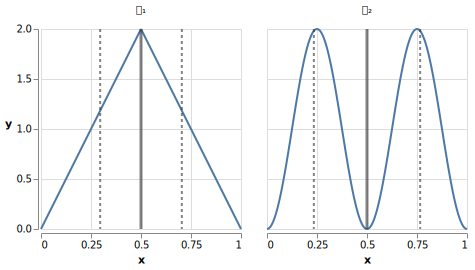

1. The Schrödinger Equation
1.1. Questions
-
.. In the absence of potential (\(V(x,t)=0\)), the Schrödinger equation can be written as \[\frac{\partial\Psi}{\partial t}=\kappa\frac{\partial^2\Psi}{\partial x^2}\] with \(\kappa=\frac{i\hbar}{2m}\). The physical interpretation of the position wavefunction \(\Psi\) is that its square magnitude is the probability density of a particle’s position.
Compare this form of the Schrödinger equation to the Heat Equation. What does this tell you about how the wavefunction flows over time?
NoteUnlike in the heat equation, \(\kappa\) is imaginary, so the analog is not perfect. However it is still instructive and at a high level gives good intuition for how probability density “flows” over time. Solution
Wavefunctions share the following features with solutions to the heat equation:
-
Solutions are waves!
-
In the heat equation, with \(\kappa\) real, heat flows opposite the direction of the temperature gradient, and flows with a magnitude proportional to the magnitude of the gradient. In the Schrödinger equation, with \(\kappa\) imaginary, “probability current” (which you will learn about later, but for now take it as a given that it is aptly named) flows opposite the direction of the gradient of the wavefunction’s phase, and with a magnitude proportional to this gradient’s magnitude.
-
As with the heat equation, solutions to the Schrödinger equation in free space get smoother and more diffuse over time. Combined with the above point, this means that the more concentrated a wavefunction is in space initially, the more rapidly it spreads out.
-
-
.. [Modified from Townsend] Show that the Schrödinger is linear: if \(\Psi_{n}\) is a solution to the Schrödinger equation, then \(\Psi = \sum_{n}c_n \Psi_n\) is also a solution.
Solution
Ultimately this is just due to the linearity of the differentiation operator and of ordinary multiplication.
If \(\Psi_n\) is a solution to the Schrödinger equation then \[-i\hbar \frac{\partial \Psi_{n}}{\partial t} - \frac{\hbar ^2}{2m}\frac{\partial ^2 \Psi_n}{\partial x^2}+ V(x)\Psi_n = 0\] Now for \(\Psi\), \[\begin{align*} &\phantom{=}-i\hbar \frac{\partial \Psi}{\partial t} - \frac{\hbar ^2}{2m}\frac{\partial ^2 \Psi}{\partial x^2}+ V(x)\Psi\\ &= -i\hbar \frac{\partial }{\partial t}\sum_n c_n\Psi_n - \frac{\hbar ^2}{2m}\frac{\partial ^2 }{\partial x^2}\sum_n c_n\Psi_n + V(x)\sum_n c_n\Psi_n\\ & = \sum_n -i\hbar \frac{\partial }{\partial t}(c_n\Psi_n) - \sum_n \frac{\hbar ^2}{2m}\frac{\partial ^2 }{\partial x^2} (c_n\Psi_n) + \sum_n V(x) (c_n\Psi_n) \\ &= \sum_n c_n (-i\hbar \frac{\partial \Psi_n }{\partial t} - \frac{\hbar ^2}{2m}\frac{\partial ^2 \Psi_n}{\partial x^2} + V(x) \Psi_n )\\ &=\sum_n c_n \cdot 0= 0 \end{align*}\] We find that if \(\Psi_n\) is a solution to the Schrödinger, then \(\Psi = \sum_n c_n \Psi_n\) is also a solution to the Schrödinger equation.
-
.. [Modified from Townsend] Show that \(u(x,t) = A\cos(\omega t+ \phi) \sin(\frac{n\pi x}{l}) \) (with appropriate choices of \(\omega,n,l\)) is a solution to the classical wave equation, \( \frac{1}{v^2}\frac{\partial ^2 u}{\partial t^2} = \frac{\partial ^2 u }{\partial x^2}\), but not the Schrödinger equation. (Ignore the trivial case where \(u=0\).)
Solution
For \(u(x,t)\) to be a solution to the classical wave equation, \( \frac{1}{v^2}\frac{\partial ^2 u}{\partial t^2} - \frac{\partial ^2 u }{\partial x^2} = 0\). For \(u(x,t)\) to be a solution to the Schrödinger equation for a free particle then \(-i\hbar \frac{\partial u}{\partial t} - \frac{\hbar ^2}{2m}\frac{\partial ^2 u}{\partial x^2} = 0\). Let’s begin with the classical wave equation: \[\begin{align*} \frac{1}{v^2}\frac{\partial ^2 u}{\partial t^2} - \frac{\partial ^2 u }{\partial x^2} &= \frac{1}{v^2}\frac{\partial ^2}{\partial t^2}\left[A\cos(\omega t+ \phi) \sin\left(\frac{n\pi x}{l}\right)\right] - \frac{\partial ^2}{\partial x^2} \left[A\cos(\omega t+ \phi) \sin\left(\frac{n\pi x}{l}\right)\right] \\ &=-A\frac{\omega^2}{v^2}\cos(\omega t+ \phi) \sin\left(\frac{n\pi x}{l}\right) + A\left(\frac{n\pi}{l}\right)^2 \cos(\omega t+ \phi) \sin\left(\frac{n\pi x}{l}\right)\\ &=\left[\left(\frac{n\pi}{l}\right)^2-\frac{\omega^2}{v^2}\right]A\cos(\omega t+\phi)\sin\left(\frac{n\pi x}{l}\right) \end{align*} \] We see that if \(v = \frac{\omega l}{n \pi}\) then \(u(x,t)\) is a solution to the classical wave equation. For the Schrödinger equation, \[\begin{align*} &\phantom{=}-i\hbar \frac{\partial u}{\partial t} - \frac{\hbar ^2}{2m}\frac{\partial ^2 u}{\partial x^2} \\ &= [-i\hbar \frac{\partial}{\partial t}\left[A\cos(\omega t+ \phi) \sin\left(\frac{n\pi x}{l}\right)\right] - \frac{\hbar ^2}{2m}\frac{\partial ^2}{\partial x^2}\left[A\cos(\omega t+ \phi) \sin\left(\frac{n\pi x}{l}\right)\right] \\ &= Ai\hbar\omega\sin(\omega t+ \phi) \sin\left(\frac{n\pi x}{l}\right)+A\frac{\hbar ^2}{2m}\left(\frac{n \pi}{l}\right)^2\cos(\omega t+ \phi)\sin\left(\frac{n\pi x}{l}\right) \end{align*}\] In order for this to equal 0 for all \(x,t\), and for \(u\) to be nontrivial, we must have \[i\hbar\omega\sin(\omega t+ \phi) +\frac{\hbar ^2}{2m}\left(\frac{n \pi}{l}\right)^2\cos(\omega t+ \phi) = 0\] There are no conditions we can impose on the constants \(\omega, n, l, \phi\) so that this is true for all time, so \(u(x,t) = A\cos(\omega t+ \phi) \sin(\frac{n\pi x}{l}) \) is not a solution to the Schrödinger equation for a free particle.
1.2. Demonstrations
-
Collapse of Wavefunction Direction and Momentum
-
Notes: for this section, show just the position component; remove momentum.
-
1.3. Other Ideas, Notes, Materials
-
Interactive timeline like the ones in some of our WSU courses (e.g., From Einstein to Ligo).
2. The Statistical Interpretation
2.1. Questions
-
.. In which of the following variations of the double slit experiment will a wavelike interference pattern be observed?
-
Using single photons
-
Using single electrons
-
Using a beam of electrons
-
Measuring which slit the particle passes through
-
Using helium atoms
Solution
For the double slit experiment, all light and matter create a wavelike interference pattern, regardless of whether single particles are used or beams of particles are used. In quantum mechanics, wavelike interference is not an artifact of collective motion — a single particle passes through both slits and interacts with itself! We see a wavelike interference pattern for a single photon, a single electron, a beam of electrons, or even helium atoms! However, if we set up an apparatus to measure which slit the particles travel through, we do not observe an interference pattern because the wavefunctions collapse upon measurement.
-
-
.. Let’s derive some of the observed properties of the interference pattern in the double slit experiment. Suppose that the (monochromatic) light has a wavelength \(\lambda\), that the slits are a distance \(d\) apart, and that the detector screen is a distance \(D\gg d\) from the slits.
-
Show that at a point \(P\) an angle \(\theta\) from the center of the detector screen, the difference in path lengths between the slits' two respective waves is given by \(\Delta l=d\sin\theta\).
-
Show that the locations of maximum constructive interference (maximum intensity) are given by \(d\sin\theta=n\lambda\) for \(n\in\mathbb Z\).
-
Show that the locations of maximum destructive interference (minimum intensity) are given by \(d\sin\theta=\left(n+\frac{1}{2}\right)\lambda\) for \(n\in\mathbb Z\).
-
Using the assumption that \(D\gg d\) (and so the rays emanating from the two slits are approximately parallel), show that the distance from the center of the detector screen to the \(n\)th crest is approximately \(\frac{n\lambda D}{d}\).
Solution (placeholder)
This is the solution
-
3. Probability
3.1. Questions
-
.. An integer is chosen uniformly at random from the set \(\{0,1, 2,\ldots, 199\}\).
-
What are the probabilities of selecting a number with 1, 2, or 3 digits?
-
Calculate the expected number of digits.
-
Find the standard deviation of the number of digits.
Solution
-
There are 10 possible 1-digit numbers, 90 possible 2-digit numbers, and 100 3-digit numbers. The probability of selecting a 1, 2, or 3 digit number are: \[P(\textrm{1}) = \frac{10}{200} = \frac{1}{20}\] \[P(\textrm{2}) = \frac{90}{200} = \frac{9}{20}\] \[P(\textrm{3}) = \frac{100}{200} = \frac{1}{2}\]
-
The expected number of digits is \[\begin{align*}\Braket{d} &= (1)P(1)+(2)P(2) + (3)P(3) \\ &= (1)\frac{1}{20}+ (2)\frac{9}{20}+(3)\frac{1}{2} \\ &= 2.45 \end{align*}\] If you choose a number at random, the expected value for the number of digits is 2.45.
-
Standard deviation is given by \(\sqrt{\Braket{d^2} - \Braket{d}^2}\), where \(d\) is the number of digits that a selected number has. \[\begin{align*} \Braket{d^2} &= (1^2)P(1)+(2^2)P(2) + (3^2)P(3) \\ &= (1)\frac{1}{20}+ (4)\frac{9}{20}+(9)\frac{1}{2} \\ &= 6.35 \end{align*}\] The standard deviation is: \[\sigma = \sqrt{6.35-(2.45)^2} = 0.59\]
-
-
.. You survey your neighbors to determine the number of pets they have in their households and collect the following data:
Number of pets in household
Number of households with that number of pets
0
3
1
6
2
5
3
2
4
2
5
0
6
0
7
1
8
0
9
0
10
1
Verify that both ways of computing standard deviation give the same answer (i.e. show that \(\sqrt{\Braket{(\Delta n)^2}} = \sqrt{\Braket{n^2} - \Braket{n} ^2}\) where n is the number of pets in the household).
Solution
Calculate \(\Braket{n}\), \(\Braket{n^2}\), and \(\Braket{(\Delta n)^2}\) \[\begin{align*} \Braket{n} &= 0(.15) + 1(.3) + 2 (.25)+ 3(.1)+ 4(.1) + \\ &5(0) + 6(0) + 7(.05) + 8(0) + 9(0) + 10(.05) \\&= 0+ .3 + .5 + .3 + . 4 + 0 + 0+ .35+ 0 + 0 +.5 \\&= 2.35 \end{align*}\] \[\begin{align*} \Braket{n^2} &= 0(.15) + 1(.3) + 4(.25)+ 9(.1)+ 16(.1) + \\ &25(0) + 36(0) + 49(.05) + 64(0) + 81(0) + 100(.05) \\&= 0+ .3 + 1 + .9 + 1.6 + 0 + 0+ 2.45 + 0 + 0 + 5 \\&= 11.25 \end{align*}\] \[\begin{align*} \Braket{(\Delta n)^2)} &= (0-2.35)^2(.15) + (1-2.35)^2(.3) +(2-2.35)^2(.25) +\\ &(3-2.35)^2(.1)+ (4-2.35)^2(.1) + (5-2.35)^2(0) +\\ &(6-2.35)^2(0) + (7-2.35)^2(.05) + (8-2.35)^2(0) +\\ &(9-2.35)^2(0) + (10-2.35)^2(.05) \\&= 0.828375 + 0.54675 + 0.030625 + 0.04225 + \\ & 0.27225 + 0 + 0 + 1.081125 + 0 + 0 + 2.926125\\ &= 5.7275 \end{align*}\] We find that \(\sqrt{\Braket{(\Delta n)^2}} = \sqrt{\Braket{n^2} - \Braket{n} ^2} = 2.39\)
-
.. Plot the following two probability density distributions over the interval 0 to 1:
\[\begin{align*} \rho_1(x)&= \begin{cases} 4x & 0\le x \le \frac{1}{2}\\ -4x+4 & \frac{1}{2}\le x\le 1 \end{cases}\\ \rho_2(x) &= 2\sin^2(2\pi x)\end{align*}\]
-
Make a prediction: on your graphs, sketch a solid line where you think the expectation value of x will be and sketch dotted lines where you think the standard deviation will fall, one line at a standard deviation below the mean and one line at a standard deviation above the mean.
-
Calculate \(\Braket{x}\) and \(\sigma\) for both distributions.
-
For both distributions, calculate the probability of selecting a value that falls within 1 standard deviation of the mean.
Solution
-
The correct graphs are below.
 -
For the first probability distribution, \(\rho_1(x)\): \[\begin{align*} \Braket{x} &= \int_0^\frac{1}{2} x (4x) dx + \int_\frac{1}{2}^1 x (-4x+4)dx \\ &= \left.\frac{4}{3}x^3 \right|_0^\frac{1}{2} + \left. \left( -\frac{4}{3}x^3 + 2x^2 \right)\right|_\frac{1}{2}^1 \\ &= \frac{1}{6} - \frac{4}{3} + 2 + \frac{1}{6} - \frac{1}{2} \\ &= \frac{1}{2} \\\\ \Braket{x^2} &= \int_0^\frac{1}{2} x^2 (4x) dx + \int_\frac{1}{2}^1 x^2 (-4x+4)dx \\ &= \left. x^4 \right|_0^\frac{1}{2} + \left. \left( -x^4 + \frac{4}{3}x^3 \right) \right|_\frac{1}{2}^1 \\ &= \frac{1}{16} - 1 + \frac{4}{3} + \frac{1}{16} - \frac{1}{6} \\ &= \frac{7}{24} \\ \sigma &= \sqrt{\Braket{x^2} - \Braket{x}^2} = \sqrt{\frac{7}{24}-\frac{1}{4}} \approx 0.204 \end{align*}\]
For the second probability distribution, \(\rho_2(x)\): \[\begin{align*} \Braket{x} &= \int_0^1 x (2\sin^2{(2 \pi x)}) dx \\ &= \int_0^1 x (1-\cos(4 \pi x)) dx \\ &= \left. \frac{x^2}{2} - \frac{x\sin(4 \pi x)}{4\pi} - \frac{\cos(4 \pi x)}{16\pi^2} \right|_0^1 \\ &= \frac{1}{2} - \frac{1}{16\pi^2} + \frac{1}{16\pi^2} \\ &= \frac{1}{2} \\ \Braket{x^2} &= \int_0^1 x^2(2\sin^2{(2 \pi x)}) dx \\ &= \int_0^1 x^2 (1-\cos(4 \pi x)) dx \\ &= \left. \frac{x^3}{3} - \frac{x^2\sin(4 \pi x)}{4\pi} - \frac{x\cos(4 \pi x)}{8\pi^2} + \frac{\sin(4 \pi x )}{32 \pi^3}\right|_0^1 \\ &= \frac{1}{3} - \frac{1}{8\pi^2} \\ \sigma &= \sqrt{\Braket{x^2} - \Braket{x}^2} = \sqrt{\left(\frac{1}{3}-\frac{1}{8\pi^2}\right) - \frac{1}{4}} \approx 0.266 \end{align*}\]
-
For \(\rho_1\) the probability of selecting a value within one standard deviation of the mean is given by: \[\begin{align*} &\phantom{=}\int_{0.296}^{0.5} (4x)dx + \int_{0.5}^{0.704} (-4x+4)dx \\ &= \left. 2x^2 \right|_{0.296}^{0.5} + \left. \left( -2x^2 + 4x \right) \right|_{0.5}^{0.704} \\ &= 0.650 \end{align*}\] For \(\rho_2\) the probability of selecting a value within one standard deviation of the mean is given by: \[\begin{align*} &\int_{0.234}^{0.766} 2\sin^2(2\pi x)dx = \left. x - \frac{\sin(4 \pi x)}{4 \pi} \right|_{0.234}^{0.766} = 0.564 \end{align*}\]
-
-
.. You are standing at the center of a number line (\(x=0\)). You repeatedly flip a coin. Every time you flip heads, you take a unit step in the positive direction. Every time you flip tails, you take a unit step in the negative direction.
-
Where on the number line could you end up after flipping the coin exactly once (\(n=1\))? How many total paths are there?
-
For \(n=0\) to \(n=3\), how many sequences of \(n\) coin flips land you at each integer? How many total paths are there? Do you notice a pattern?
-
Use Pascal’s triangle to determine the probability of landing at each integer after 7 steps. Where are you most likely to land? Calculate the expected value and standard deviation.
Solution
-
You could end up at \(x = \pm 1\). There is 1 path, {T}, to \(x = - 1\) and 1 path, {H}, to \(x = - 1\), for a total of 2 paths.
-
For 0 to 3 flips:
n=0
x=0, 1 path: {X}
total: 1
n=1
x=-1, 1 path: {T} | x=1, 1 path: {H}
total paths: 2
n=2
x=-2, 1 path: {TT} | x=0, 2 paths: \{TH, HT\} | x=2, 1 path: {HH}
total paths: 4
n=3
x=-3, 1 path: {TTT} | x=-1, 3 paths: \{TTH, THT, HTT\} | x=1, 3 paths: \{HHT, HTH, THH\} |x=3, 1 path: {HHH}
total paths: 8
For each n, there are \(2^n\) total paths, and the number of paths to get to each endpoint are given by binomial coefficients, which we see in Pascal’s triangle. -
[Insert triangle here] Using Pascal’s triangle, we come up with the following probabilities:
-
3.2. Demonstrations
-
Discrete density function
-
Continuous density function
-
Show how the moments of various distributions depend on their parameters (e.g., show one standard deviation of a gaussian and how it changes with the parameter \(\sigma\)).
3.3. Other Ideas, Notes, Materials
-
Discuss basic properties of probability distributions:
-
Linearity of expectation
-
How scaling \(x\) affects \(\sigma\)
-
4. Normalization
4.1. Questions
-
.. Normalize the following wavefunctions (i.e. find \(A_i\)) over the domain \(x\in \mathbb R\):
-
\(\Psi_1(x,t)= A_1e^{-(\frac{ax^2}{2}+i\omega t)}\)
-
\(\Psi_2(x,0)= A_2e^{-\kappa|x|}\)
-
\(\Psi_3(x,0)= A_3\frac{\sin(x)}{x}\)
-
\(\Psi_4(x,t)= A_4\frac{e^{-i\omega t}}{x+e^{i \pi/2}}\)
Solution
The squared norm of a wavefunction \(\Psi\) is \(|\Psi|:=\int_{-\infty}^\infty|\Psi(x,t)|^2\,dx\). Normalizing a wavefunction simply requires setting its (squared) norm to 1, then solving for the normalization constant \(A\).
Recall that a complex number \(ke^{ix}\) has magnitude \(k\).
-
Let \(\sigma=\frac{1}{\sqrt{2a}}\). Then \[\begin{align*} |\Psi_1|^2&=\int_{-\infty}^\infty \left|A_1e^{-(\frac{ax^2}{2}+i\omega t)}\right|^2\,dx\\ &=\int_{-\infty}^\infty A_1^2e^{-ax^2}\,dx\\ &=\sigma\sqrt{2\pi}A_1^2\int_{-\infty}^\infty \frac{1}{\sigma\sqrt{2\pi}}e^{-\frac{1}{2}\left(\frac{x}{\sigma}\right)^2}\,dx\\ &= \sigma\sqrt{2\pi}A_1^2\cdot 1\\ &=\sqrt{\frac{\pi}{a}} \end{align*}\] Setting this equal to 1, we obtain \(A_1=\left(\frac{a}{\pi}\right)^{\frac{1}{4}}\).
-
\[\begin{align*} |\Psi_2|^2&=\int_{-\infty}^\infty \left|A_2 e^{-\kappa|x|}\right|^2\,dx\\ &=\int_{-\infty}^\infty A_2^2 e^{-2\kappa|x|}\,dx\\ &=\int_{-\infty}^0 A_2^2 e^{2\kappa x}\,dx+\int_0^{\infty} A_2^2 e^{-2\kappa x}\,dx\\ &=2\int_0^{\infty} A_2^2 e^{-2\kappa x}\,dx\\ &=2 A_2^2 \left.\frac{e^{-2\kappa x}}{-2\kappa}\right|^\infty_0\\ &=\frac{A_2^2}{\kappa} \end{align*}\]
Setting this equal to 1, we obtain \(A_2=\sqrt\kappa\).
-
\[\begin{align*} |\Psi_3|^3&=\int_{-\infty}^\infty \left|A_3 \frac{\sin (x)}{x}\right|^2\,dx\\ &=\int_{-\infty}^\infty A_3^2 \frac{\sin^2 (x)}{x^2}\,dx\\ \end{align*}\]
-
-
.. Write a normalized wavefunction, \(\Psi(x,t)\), with expectation \(\Braket{x}\) and standard deviation \(\sigma\) at time \(t=0\).
Solution
It’s easiest to start with a known probability distribution — their means and standard deviations are often part of their parameterization, and by definition they’re normalized — and then work backwards to the wavefunction.
One probability distribution parameterized by its mean and standard deviation is the normal distribution. The normal distribution with mean \(\Braket{x}\) and standard deviation \(\sigma\) is \[f(x)=\frac{1}{\sigma\sqrt{2\pi}}e^{-\frac{1}{2}\left(\frac{x-\Braket{x}}{\sigma}\right)}\]
One wavefunction whose probability distribution is \(f\) is \(f\)’s square root: \[\psi(x)=\sqrt{f(x)} =\frac{1}{\sqrt{\sigma\sqrt{2\pi}}}e^{-\frac{1}{4}\left(\frac{x-\Braket{x}}{\sigma}\right)}\]
For fun, we can throw in a phase dependence on \(t\); it won’t affect the magnitude: \[\Psi(x,t)=\frac{e^{-it}}{\sqrt{\sigma\sqrt{2\pi}}}e^{-\frac{1}{4}\left(\frac{x-\Braket{x}}{\sigma}\right)}\]
-
.. In one dimension, the probability current \(J\) describes the rate at which probability flows past point \(x\). For a free particle with mass \(m\) whose wavefunction is \(\Psi(x,t)\), or \(\Psi\) for short, it is given by \[J(x,t) = \frac{i \hbar}{2m}\left(\Psi\frac{\partial\Psi^{*}}{\partial x}-\Psi^{*}\frac{\partial\Psi}{\partial x}\right)\]
-
Show that \[\ \frac{d}{dt} \int_a^b |\Psi|^2 \,dx= J(a,t) - J(b,t) \] What “law” does this equation represent? What happens to the probability current in the region from \(-\infty\) to \(\infty\)? What does this mean?
-
[From the Bernd Thaller book] Write \(\Psi(x,t)=|\Psi(x,t)|e^{i\varphi(x,t)}\). (Here, \(|\Psi(x,t)|\) represents the magnitude of the wavefunction at \((x,t)\), not the norm of the wavefunction over all space.) Show that \(J\) as defined above points in the direction of \(\frac{\partial \varphi}{\partial x}\) (or in the 3D case, \(\nabla \varphi\)), i.e., in the direction of increasing phase. (This is not so interesting in the one-dimensional case, in which there is only one direction to point, but the same idea holds in higher dimensions; \(J\) points in the direction of \(\nabla \varphi\).)
Solution
-
First, recall the Schrödinger equation for a free particle, \[ i\hbar\frac{\partial \Psi}{\partial t}=-\frac{\hbar^2}{2m}\frac{\partial^2}{\partial x^2}\Psi \] Now recall that \(\frac{\partial(f^*)}{\partial x}=\left(\frac{\partial f}{\partial x}\right)^*\). Then, \[\begin{align*} \frac{\partial \Psi}{\partial t}&=\frac{i\hbar}{2m}\frac{\partial^2\Psi}{\partial x^2}\\ \frac{\partial \Psi^*}{\partial t}&=-\frac{i\hbar}{2m}\frac{\partial^2\Psi^*}{\partial x^2} \end{align*}\] Now, applying the product rule twice, once forwards and once backwards, \[\begin{align*} \frac{d}{dt}|\Psi|^2&=\frac{d}{dt} (\Psi^*\Psi)\\ &=\frac{d\Psi^*}{dt}\Psi +\Psi^*\frac{d\Psi}{dt}\\ &=\left(-\frac{i\hbar}{2m}\frac{\partial^2\Psi^*}{\partial x^2}\right)\Psi+\Psi^*\left(\frac{i\hbar}{2m}\frac{\partial^2\Psi}{\partial x^2}\right)\\ &=-\frac{i\hbar}{2m}\left(\Psi\frac{\partial^2\Psi^*}{\partial x^2}-\Psi^*\frac{\partial^2\Psi}{\partial x^2}\right)\\ &=-\frac{i\hbar}{2m}\left[\left(\Psi\frac{\partial^2\Psi^*}{\partial x^2}+\frac{\partial \Psi}{\partial x}\frac{\partial\Psi^*}{\partial x}\right)\right.\\ &\phantom{=\frac{i\hbar}{2m}[}-\left.\left(\Psi^*\frac{\partial^2\Psi}{\partial x^2}+\frac{\partial \Psi^*}{\partial x}\frac{\partial\Psi}{\partial x}\right)\right]\\ &=-\frac{i\hbar}{2m}\left[\frac{\partial}{\partial x} \left(\Psi\frac{\partial\Psi^*}{\partial x}\right)-\frac{\partial}{\partial x}\left(\Psi^* \frac{\partial \Psi}{\partial x}\right)\right]\\ &=-\frac{\partial}{\partial x}\left[\frac{i\hbar}{2m}\left(\Psi\frac{\partial\Psi^*}{\partial x}-\Psi^* \frac{\partial \Psi}{\partial x}\right)\right]\\ &=-\frac{\partial J}{\partial x} \end{align*}\] And the integral is now trivial: \[\begin{align*} \frac{d}{dt}\int_a^b |\Psi|^2\,dx&=\int_a^b\frac{d}{dt} |\Psi|^2\,dx\\ &=\int_a^b-\frac{\partial J}{\partial x}\,dx\\ &=-J(x,t)\Bigr|^{x=b}_{x=a}\\ &=J(a,t)-J(b,t) \end{align*}\] We see that the net amount of probability leaving or entering the region \([a,b]\) is the difference between the values of the probability current at \(a\) and \(b\). This means that “probability current” is, in fact, a good name for this quantity: if the rate at which the total amount of some quantity contained in a region changes over time is given by the value of a function on the region’s boundary, then, via Gauss’s Theorem, we can liken the function’s value on the surface to a current. (For more info, see Transport Equation.) From this perspective, the probability current, as its name would suggest, represents the flow of probability, and the rate at which the net probability in a region changes is given by the net probability current over the region’s boundary. (This is all somewhat trivial in this 1D case but it extends to higher dimensions as well, when \(\frac{\partial \Psi}{\partial x}\) is replaced by \(\nabla \Psi\) and the region’s boundary is an actual surface and not just two points on either side.)
Since \(\Psi\) is square integrable, it must go to 0 as \(x\to\pm\infty\), and therefore so must \(J\) (just by the definition). And so \[\frac{d}{dt}\int_{-\infty}^\infty |\Psi|^2\,dx=0\] This indicates that probability is conserved: it cannot just appear out of or disappear into nowhere; it can only move from one place to another. (This is good — we need probabilities to always add up to 1.)
-
First, \[\begin{align*} \frac{\partial (|\Psi|e^{\pm i\varphi})}{\partial x}&=\frac{\partial |\Psi|}{\partial x}e^{\pm i\varphi}+|\Psi|\frac{\partial e^{\pm i\varphi}}{\partial x}\\ &=\frac{\partial |\Psi|}{\partial x} e^{\pm i\varphi}+|\Psi|e^{\pm i\varphi}\left(\pm i\frac{\partial \varphi}{\partial x}\right)\\ &= e^{\pm i\varphi}\left(\frac{\partial |\Psi|}{\partial x} \pm i|\Psi|\frac{\partial \varphi}{\partial x}\right) \end{align*}\] And so \[\begin{align*} J&=\frac{i\hbar}{2m}\left((|\Psi| e^{i\varphi})\frac{\partial (|\Psi| e^{-i\varphi})}{\partial x}-(|\Psi| e^{-i\varphi})\frac{\partial (|\Psi| e^{i\varphi})}{\partial x}\right)\\ &=\frac{i\hbar}{2m}\left[(|\Psi| e^{i\varphi}) e^{-i\varphi}\left(\frac{\partial |\Psi|}{\partial x} - i|\Psi|\frac{\partial \varphi}{\partial x}\right)\right. \\ &\phantom{=\frac{i\hbar}{2m}}\quad-\left.(|\Psi| e^{-i\varphi}) e^{ i\varphi}\left(\frac{\partial |\Psi|}{\partial x} + i|\Psi|\frac{\partial \varphi}{\partial x}\right)\right]\\ &=\frac{i\hbar}{2m}\left[-2i|\Psi|\frac{\partial \varphi}{\partial x}\right]\\ &=\frac{\hbar}{m}|\Psi|\frac{\partial \varphi}{\partial x} \end{align*}\] which does indeed point in the direction of \(\frac{\partial \varphi}{\partial x}\) (or, in higher dimensions, \(\nabla \varphi\)).
-
4.2. Demonstrations
-
Probability and Sampling Experiment (1D)
-
Already shown above, but this time you can emphasize how after changing the shape of the wavefunction, it immediately adjusts \(\psi\) so that its (squared) magnitude remains 1.
-
5. Momentum
5.1. Questions
-
.. For the following wavefunction over the interval \([0,1]\) \[\Psi(x,t) = e^{-i \lambda_1 t}\sin(\pi x) + e^{-i \lambda_2 t}\sin(2 \pi x) \]
-
Show that \(\Psi(x,t)\) is normalized.
-
Calculate \(\Braket{x}\) and \(\Braket{p} \).
-
Calculate \(\frac{d \Braket{x}}{dt}\). Does Ehrenfest’s theorem hold?
-
Find \(\Braket{- \frac{\partial V}{\partial x}} \).
Solution
You will want to have on hand a big list of trigonometric identities. Here are the main ones we’ll use:
\[\begin{align*} \sin^2(x)&=\frac{1}{2}(1-\cos(2x))\\ \sin(2\alpha)&=2\sin(\alpha)\cos(\alpha)\\ \sin(\alpha)\sin(\beta)&=\frac{1}{2}(\cos(\alpha-\beta)-\cos(\alpha+\beta))\\ \sin(\alpha)\cos(\beta)&=\frac{1}{2}(\sin(\alpha-\beta)+\sin(\alpha+\beta)) \end{align*}\]
We’ll also want the following two integrals: for integer \(n\), \[\begin{align*} \int_0^1\cos(n\pi x)\,dx&=\left.\frac{\sin(n\pi x)}{n\pi}\right|^1_0=0\\ \int_0^1\sin(n\pi x)\,dx&=\left.-\frac{\cos(n\pi x)}{n\pi}\right|^1_0=\begin{cases}\frac{2}{n\pi}&n\ \textrm{odd}\\0&n\ \textrm{even}\end{cases} \end{align*}\]
And we’ll want the following, which requires integration by parts. Let \(u=x,dv=\cos(n\pi x)\,dx\). Then \(du=dx\) and \(v=\frac{\sin(n\pi x)}{n \pi }\). \[\begin{align*} \int_0^1x\cos(n\pi x)\,dx&=\int_0^1u\,dv\\ &=uv\Bigr|^1_0 - \int_0^1v\,du\\ &=\left.\frac{x\sin(n\pi x)}{n\pi}\right|^1_0-\int_0^1\frac{\sin(n\pi x)}{n\pi }\,dx\\ &=\begin{cases}-\frac{2}{(n\pi)^2}&n\ \textrm{odd}\\0&n\ \textrm{even}\end{cases} \end{align*}\]
Ok, on to the task at hand.
-
First note that \[\begin{align*} \int_0^1\sin^2(n\pi x)\,dx =\int_0^1\frac{1}{2}(1-\cos(2n\pi x))\,dx=\frac{1}{2} \end{align*}\] And if \(m\ne n\) then \[\begin{align*} &\phantom{=}\int_0^1\sin(m\pi x)\sin(n \pi x)\,dx\\ &=\int_0^1\frac{1}{2}(\cos((m-n)\pi x)-\cos((m+n)\pi x))\,dx\\ &=0 \end{align*}\] Now, \[\begin{align*} |\Psi(x,t)|^2&=\Psi^*\Psi\\ &=(e^{i \lambda_1 t}\sin(\pi x) + e^{i \lambda_2 t}\sin(2 \pi x))\\ &\phantom{=}\cdot (e^{-i \lambda_1 t}\sin(\pi x) + e^{-i \lambda_2 t}\sin(2 \pi x))\\ &=\sin^2(\pi x)+\sin^2(2\pi x) \\ &\phantom{=}+ \left(e^{i(\lambda_1-\lambda_2)t}+e^{-i(\lambda_1-\lambda_2)t}\right)\sin(\pi x)\sin(2\pi x)\\ &=\sin^2(\pi x)+\sin^2(2\pi x)+\phi\sin(\pi x)\sin(2\pi x) \end{align*}\] where \(\phi=e^{i(\lambda_1-\lambda_2)t}+e^{-i(\lambda_1-\lambda_2)t}\). Now we simply compute: \[\begin{align*} |\Psi|^2&=\int_{0}^1 \Psi^*\Psi \,dx\\ &=\int_0^1 \sin^2(\pi x)+\sin^2(2\pi x)+\phi\sin(\pi x)\sin(2\pi x)\,dx\\ &=\frac{1}{2}+\frac{1}{2}+0\\ &=1 \end{align*}\] So \(\Psi\) is indeed normalized.
-
Warning
These integrals won’t be pretty. \[\begin{align*} \Braket{x}&=\int_0^1\Psi(x,t)^*\,x\,\Psi(x,t)\,dx\\ &=\int_0^1x|\Psi(x,t)|^2\,dx\\ &=\int_0^1 x(\sin^2(\pi x)+\sin^2(2\pi x)+\phi\sin(\pi x)\sin(2\pi x))\,dx \end{align*}\] We’ll do the three components separately, starting with the first two. \[\begin{align*} \int_0^1x\sin^2(n\pi x)&=\int_0^1 x\cdot\frac{1}{2}(1-\cos(2 n\pi x))\,dx\\ &=\frac{1}{2}\left(\int_0^1x \,dx - \int_0^1x\cos(2 n \pi x)\,dx\right)\\ &=\frac{1}{2}\left(\left.\frac{x^2}{2}\right|^1_0-0\right)\\ &=\frac{1}{4} \end{align*}\] Great, that’s two components down. Now let’s do the third component (without the \(\phi\) constant for now). \[\begin{align*} &\phantom{=}\int_0^1x\sin(\pi x)\sin(2\pi x)\,dx\\ &=\int_0^1 x\cdot\frac{1}{2}\left(\cos(-x)-\cos(3x)\right)\,dx\\ &=\frac{1}{2}\left(-\frac{2}{(-\pi)^2}-\frac{2}{(3\pi)^2}\right)\\ &=-\frac{8}{9\pi^2} \end{align*}\] And so, we finally obtain \[\Braket{x}=\frac{1}{4}+\frac{1}{4}-\frac{8\phi}{9\pi^2}=\frac{1}{2}-\frac{8\phi}{9\pi^2}\] Wait a minute — \(\phi\) is complex, but \(\Braket{x}\) must be real. Well, if \(w\in\mathbb R\), then \[\begin{align*} e^{iw}+e^{-iw}&=e^{iw}+(e^{iw})^*\\ &=2\,\mathfrak{Re}[e^{iw}]\\ &=2\cos(w) \end{align*}\] So, \[\begin{align*} \phi=e^{i(\lambda_1-\lambda_2)t}+e^{-i(\lambda_1-\lambda_2)t}=2\cos((\lambda_1-\lambda_2)t) \end{align*}\] So \(\phi\) was real along. We finally obtain \[\begin{align*} \Braket{x} = \frac{1}{2}-\frac{16\cos((\lambda_1-\lambda_2)t)}{9\pi^2} \end{align*}\]
On to \(\Braket{p}\)! \[\begin{align*} \Braket{p}&=\int_0^1 \Psi(x,t)^*\,\left(-i\hbar\frac{\partial }{\partial x} \right)\Psi(x,t)\,dx\\ &=-i\hbar\int_0^1\Psi^*\frac{\partial \Psi}{\partial x}\,dx \end{align*}\] Let’s compute the integrand: \[\begin{align*} \Psi^* &=e^{i\lambda_1 t}\sin(\pi x)+e^{\lambda_2 t}\sin(2\pi x)\\ \frac{\partial \Psi}{\partial x} &=\pi e^{-i\lambda_1 t}\cos(\pi x)+2\pi e^{-\lambda_2 t}\cos(2\pi x)\\\\ \Psi^* \frac{\partial \Psi}{\partial x}&=\pi\sin(\pi x)\cos(\pi x)+2\pi \sin(2\pi x)\cos(2\pi x)\\ &\phantom{=}+\,\pi e^{-(\lambda_1-\lambda_2)t}\sin(2\pi x)\cos(\pi x)\\ &\phantom{=}+\,2\pi e^{i(\lambda_1-\lambda_2)t}\sin(\pi x)\cos(2\pi x)\\ &=\frac{\pi}{2}\sin(2\pi x)+\pi\sin(4\pi x)\\ &\phantom{=}+\,\pi e^{-i(\lambda_1-\lambda_2)t}\left(\sin(\pi x)+\sin(3\pi x)\right)\\ &\phantom{=}+\,2\pi e^{i(\lambda_1-\lambda_2)t}\left(\sin(-\pi x)+\sin(3\pi x)\right)\\ &=\frac{\pi}{2}\sin(2\pi x)+\pi\sin(4\pi x)\\ &\phantom{=}+\,\pi\sin(\pi x)\left(e^{-i(\lambda_1-\lambda_2)t}-2e^{i(\lambda_1-\lambda_2)t}\right)\\ &\phantom{=}+\,\pi\sin(3\pi x)\left(e^{-i(\lambda_1-\lambda_2)t}+2 e^{i(\lambda_1-\lambda_2)t}\right) \end{align*}\] Now, we need to integrate this. Thankfully we already know how to compute \(\int_0^1 \sin(n\pi x)\,dx\), and so we obtain \[\begin{align*} \Braket{p}&=-i\hbar\int_0^1 \Psi^*\frac{\partial \Psi}{\partial x}\,dx\\ &=-i\hbar\int_0^1\left[\frac{\pi}{2}\sin(2\pi x)+\pi\sin(4\pi x)\right.\\ &\phantom{i\hbar\int_0^1}\quad\quad+\pi\sin(\pi x)\left(e^{-i(\lambda_1-\lambda_2)t}-2 e^{i(\lambda_1-\lambda_2)t}\right)\\ &\phantom{i\hbar\int_0^1}\quad\quad+\left.\pi\sin(3\pi x)\left(e^{-i(\lambda_1-\lambda_2)t}+2 e^{i(\lambda_1-\lambda_2)t}\right)\right]\,dx\\ &=-i\hbar\left[2\left( e^{-i(\lambda_1-\lambda_2)t}-2 e^{i(\lambda_1-\lambda_2)t}\right)\right.\\ &\quad\quad+\,\left.\frac{2}{3}\left( e^{-i(\lambda_1-\lambda_2)t}+2 e^{i(\lambda_1-\lambda_2)t}\right)\right]\\ &=-i\hbar\left(\frac{8}{3}e^{-i(\lambda_1-\lambda_2)t}-\frac{8}{3}e^{i(\lambda_1-\lambda_2)t}\right)\\ &=-\frac{8i\hbar}{3}\left(e^{-i(\lambda_1-\lambda_2)t}-e^{i(\lambda_1-\lambda_2)t}\right) \end{align*}\] Uh oh, this also looks like it might not be real. But, \[\begin{align*} e^{iw}-e^{-iw}&=e^{iw}-(e^{iw})^*\\ &=2i\,\mathfrak{Im}[e^{iw}]\\ &=2i\sin(w) \end{align*}\] and so, finally, \[\begin{align*} \Braket{p}&=-\frac{8i\hbar}{3}\left(2i\sin((\lambda_1-\lambda_2)t)\right)\\ &=\frac{16\hbar \sin((\lambda_1-\lambda_2)t)}{3} \end{align*}\]
-
We have \[\begin{align*} \frac{d\Braket{x}}{dt}&=\frac{d}{dt}\left(\frac{1}{2}-\frac{16\cos((\lambda_1-\lambda_2)t)}{9\pi^2}\right)\\ &=(\lambda_1-\lambda_2)\frac{16\sin((\lambda_1-\lambda_2)t)}{9\pi ^2} \end{align*}\] This doesn’t quite look like \(\frac{\Braket{p}}{m}\) yet, but we can apply the Schrödinger equation to make it so. First, \[\begin{align*} \frac{\partial ^2\Psi}{\partial x^2}&=\frac{\partial }{\partial x}\left(\pi e^{-i\lambda_1 t}\cos(\pi x)+2\pi e^{-i\lambda_2 t}\cos(2\pi x)\right)\\ &=-\pi^2 e^{-i\lambda_1t}\sin(\pi x)-4\pi^2 e^{-i\lambda_2 t}\sin(2\pi x)\\ &=-\pi^2\left(e^{-i\lambda_1 t}\sin(\pi x)+4e^{-i\lambda_2 t}\sin(2\pi x)\right) \\\\ \frac{\partial \Psi}{\partial t}&=-i\lambda_1 e^{-i\lambda_1 t}\sin(\pi x)-i\lambda_2 e^{-i\lambda_2 t}\sin(2\pi x) \end{align*}\]
\[\begin{align*} \frac{\partial \Psi}{\partial t}&=\frac{\partial }{\partial t}\left(e^{-i \lambda_1 t}\sin(\pi x) + e^{-i \lambda_2 t}\sin(2 \pi x) \right)\\ &=-i\lambda_1e^{-i\lambda_1 t}\sin(\pi x)-i\lambda_2 e^{-i\lambda_2t}\sin(2\pi x)\\ &=-i\left[\lambda_1(\cos(-\lambda_1 t)+i\sin(-\lambda_1 t))\sin(\pi x)\right.\\ &\phantom{=}\,\quad+\left.\lambda_2 (\cos(-\lambda_2 t)+i\sin(-\lambda_2 t))\sin(2\pi x)\right]\\ &=-\left(\lambda_1\sin(\lambda_1 t)\sin(\pi x)+\lambda_2\sin(\lambda_2 t)\sin(2\pi x)\right)\\ &\phantom{=}-i\left(\lambda_1\cos(\lambda_1 t)\sin(\pi x)+\lambda_2\cos(\lambda_2 t)\sin(2\pi x)\right) \end{align*}\]
-
-
.. Show that in a quadratic potential \(V(x)=ax^2+bx+c\), the following holds: \[\frac{d\Braket{p}}{dt}=-\left.\frac{\partial V}{\partial x}\right|_{x=\Braket{x}}\] In other words, if the potential is quadratic then we can say “the expectation of the force at \(x\) is the force evaluated at \(\Braket{x}\)”.
Solution
Starting with Ehrenfest’s theorem, all we need to do is compute \(-\frac{\partial V}{\partial x}\) and use the linearity of expectation:
\[ \begin{align*} \frac{d\Braket{p}}{dt}&=\Braket{-\frac{\partial V}{\partial x}}\\ &=\Braket{-(2ax+b)}\\ &=-(2a\Braket{x} + b)\\ &=-\left.\frac{\partial V}{\partial x}\right|_{x=\Braket{x}} \end{align*} \]
If \(V\) had any higher order \(x\) terms, then its derivative would have a term of order \(x^2\) or higher, and the above procedure wouldn’t work because in general \(\Braket{x^n}\ne\Braket{x}^n\).
-
.. Any dynamical variable can be expressed in terms of position and momentum. Angular momentum is given by \[\textbf{L} = \textbf{r} \times \textbf{p}.\] In this problem you will get a small preview of orbital angular momentum, which you will learn much more about in Module 4. We will be working in three dimensions, where \(\textbf{r} = r\hat{r}\) and \(\textbf{p} = -i \hbar \nabla \).
-
Find the expression for \(\textbf{L}\) in spherical coordinates.
-
Find \(L^2\).
-
Calculate \(\Braket{L^2}\) for the spatial component of the wavefunction \( \sqrt{\frac{15}{8\pi}}\sin{\theta}\cos{\theta}e^{-i\phi} \)
Solution (placeholder)
This is the solution
-
5.2. Demonstrations
-
Demonstrate Ehrenfest’s Theorem on various wavefunctions evolving over time by showing \(\Braket{x}_\psi\) and \(\Braket{p}_\psi\).
-
✓ Harmonic oscillator: the quantum harmonic oscillator
-
❏ Particle in a box
-
❏ others?
-
-
Sample from these wavefunctions, e.g., let the harmonic oscillator evolve a bunch, then sample its position at a given point in time (pretending that we have an ensemble of identically prepared harmonic oscillators). Let the resulting \(\delta\) function evolve (spread out, oscillate), then sample again. Etc.
-
Unfortunately this doesn’t seem feasible. The universe is fortunate to get to run its computations instantly, but computers aren’t so lucky. While in QM a wavefunction is an infinite linear combination of basis functions, actually rendering it on a computer requires taking only a finite linear combination, and for Gaussians with variance outside a relative narrow band centered around 1 it takes more terms to render them faithfully than be computed in a reasonable amount of time.
-
6. The Uncertainty Principle
6.1. Questions
-
.. For the wavefunction from question .., \[\Psi(x,t) = e^{-i \lambda_1 t}\sin(\pi x) + e^{-i \lambda_2 t}\sin(2 \pi x) \]
-
Calculate \(\Braket{p^2}\) and \(\sigma_p\).
-
What is the minimum possible value of \(\sigma_x\)?
-
Calculate \(\Braket{x^2}\) and \(\sigma_x\). Does the Heisenberg uncertainty principle hold?
Solution (placeholder)
This is the solution
-
-
.. Estimate \(\sigma_p\) for a photon that is confined to a cone cell in the eye with a diameter of 2 \(\mu\)m.
Solution (placeholder)
This is the solution